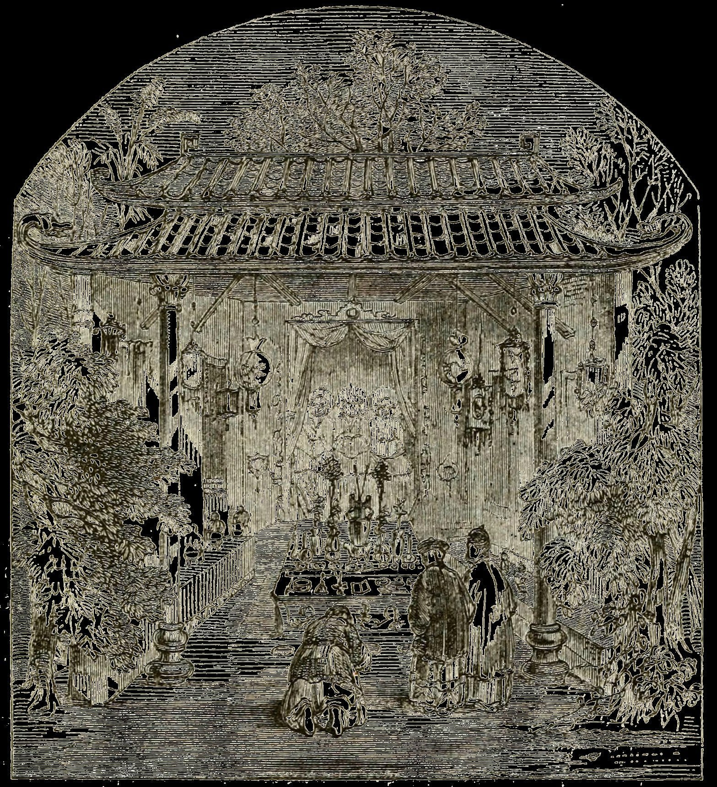
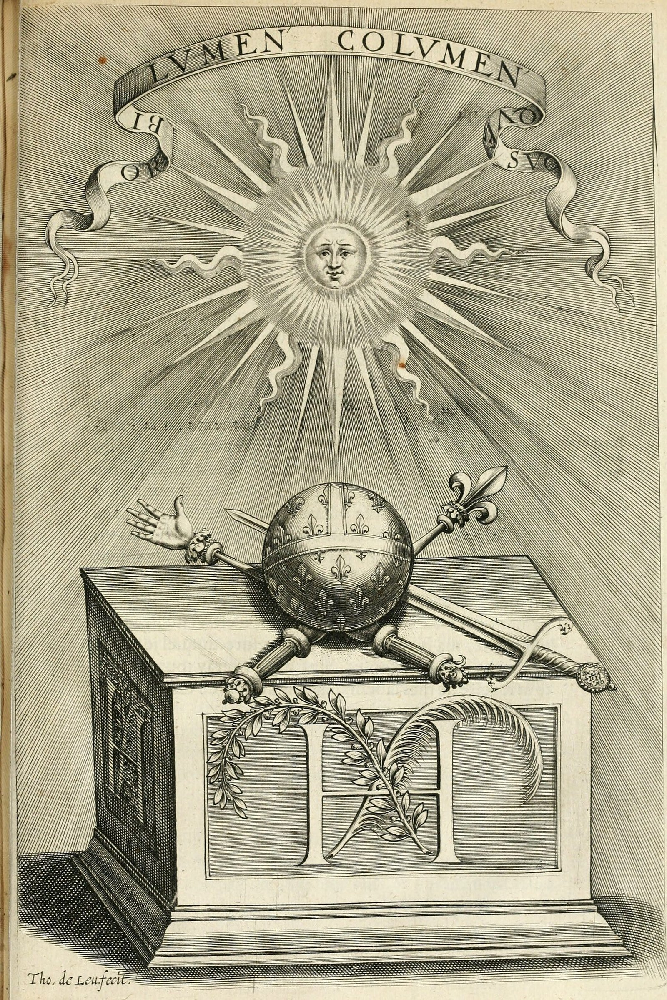
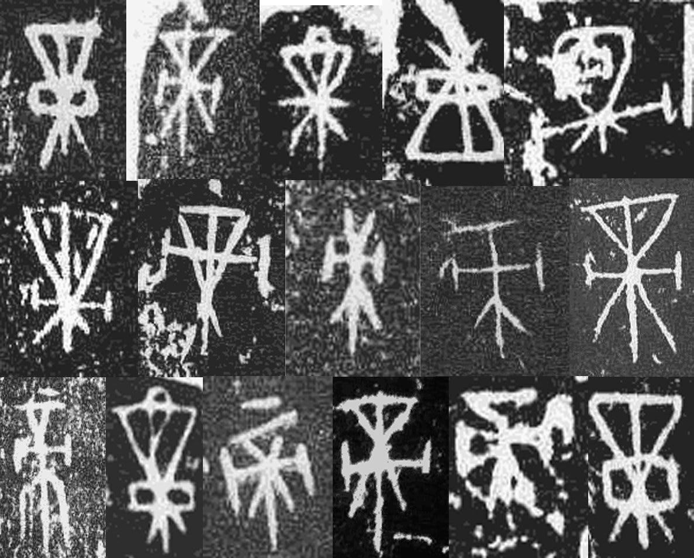
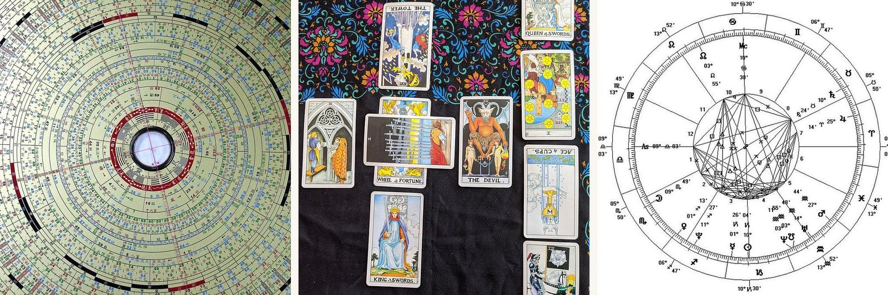

我的論文從哪裡開始
第一篇。兩個黑盒子，還有我為什麼回頭去找其中一個。

我打算用這個地方，邊做畢業論文邊把過程記錄下來。當下在想什麼、中途改了什麼，或是哪裡後來發現想錯了，都會寫在這裡。比起等到最後才端出成品，假裝它從頭到尾都長這樣，我比較想做到哪就寫到哪。接下來隨著進度推進，這裡也會持續更新。
事情要從我找題目說起。
我一直希望論文題目跟自己來自哪裡有關。這理由聽起來很小，卻是我心裡最真實的想法。前幾個月我一直在幾個理論上站得住腳的題目之間打轉，但怎麼看都覺得跟自己沒什麼關係。後來我才回頭想到從小在身邊看慣的擲筊。
在台灣，去廟裡向道教神明問問題就是透過擲筊。你手裡拿著兩片一面平、一面凸的木頭，先報上自己是誰，再講清楚想知道什麼，接著把它們往地上一擲。
一平一凸代表「是」，兩面都凸代表「否」，兩面都平的意思是神明在笑你。你必須連續擲出三次「是」才算數。接著你去抽支寫著號碼的籤，找到對應號碼的抽屜，從裡頭拿出一張籤詩。至於那首詩在寫什麼，沒有人會幫你解釋。
我自己不是信徒，但這些事我也照樣做過。
只是我越來越常注意到，整個過程跟我們問 AI 問題實在很像。
我講的跟表面的儀式感無關，真正相像的地方在於結構。兩者底下都有套運作機制。擲筊有筊杯、籤支、籤詩和解籤的人；AI 則有模型、訓練資料和演算法。而且不管是用哪邊，幾乎沒有使用者講得出來，它最後交回你手上的結果到底是怎麼得出來的。
這兩樣東西都是黑盒子。但讓我感興趣的地方在於，大家根本不會因為這樣就卻步。人們還是照問不誤，問完之後，也真的照著它給的話去做。
還有另一件事，我一直忍不住反覆在想。
當木筊擲出「否」的時候，大家不會就此打住，反而會換個講法再問一次。標準的解讀方式不會把這當成「神明拒絕了你」，大家會認為那代表「剛剛那還不算真正的問題，再講得具體一點」。這套系統其實是在叫你重寫你的 prompt。
我每天跟 AI 互動好幾次都在做一模一樣的事，只是沒想到居然會在廟裡看到同樣的場景。
如果用我現在能講得最清楚的方式來說，下面這個問題就是我想追下去的方向。
面對自己並不理解的系統，人要怎麼把裡頭給出的結果，變成自己願意付諸行動的決定？
我不認為人們去求神問卜是為了拿資訊，也不認為大家去找 chatbot 是為了拿資訊。人們真正想要的是一份「許可」，想找個自己以外的力量，幫忙扛下做決定的重量。

這也讓我開始好奇，看不見裡頭怎麼運作，真的算是缺點嗎？說不定，這正是它之所以管用的原因之一。

我現在才剛起步。接下來，我會先去找那些專注於思考 AI、本身並非打造 AI 的人聊聊，也會去接觸真正拿 AI 來做決定的人。同時我想盤點看看，無論在東方還是西方，現在已經有哪些把 AI 跟占卜結合在一起的例子。

我還不知道這最後會發展成什麼，可能是篇論文、一件裝置作品，或是其他形式。與其現在就先選好、再花一整年的時間去合理化當初的選擇，我寧可讓問題本身來決定。
如果你也曾經問過機器某個問題，不喜歡它的回答，於是一直重問到它同意你為止，我很想聽聽你的經驗。